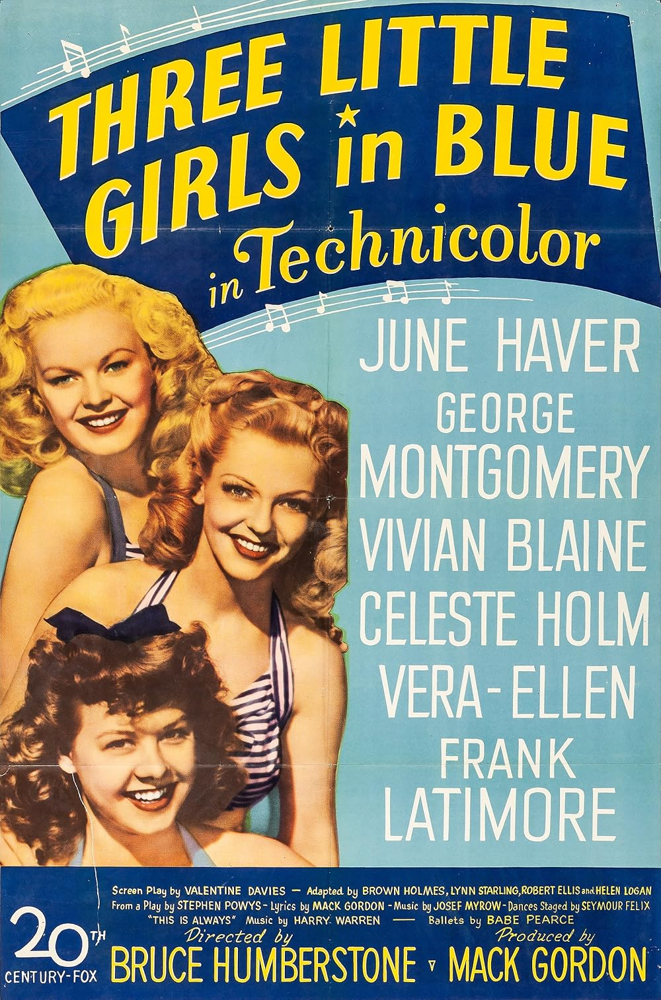

Three Little Girls in Blue
19th Academy Awards
(Oscars 1947)
0 Nominations*, 0 Awards
| Nominations | ||
|---|---|---|
| Category | Nominees | Result |
| Music (Song) "This Is Always" |
Harry Warren and Mack Gordon | Rescinded |